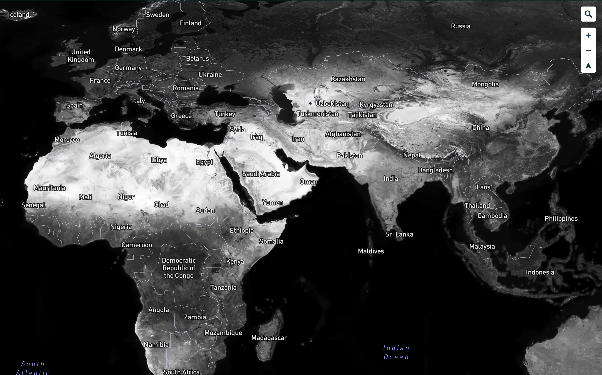
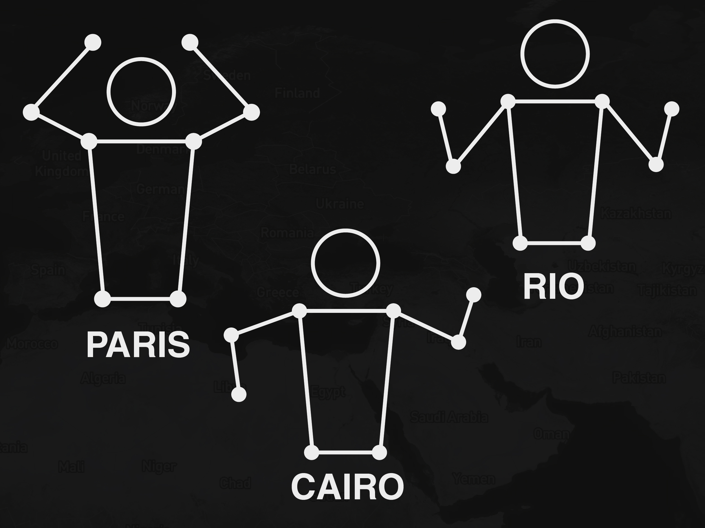
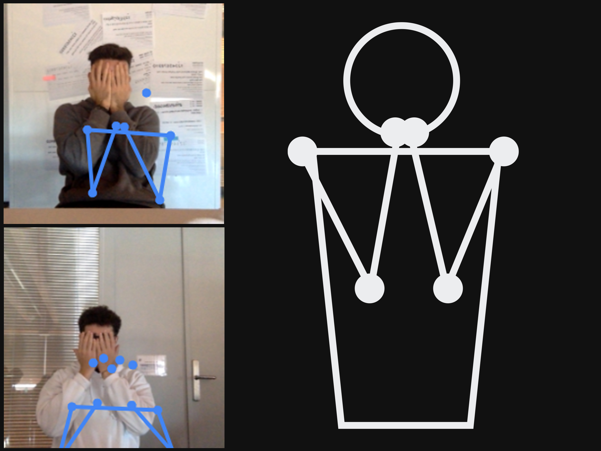
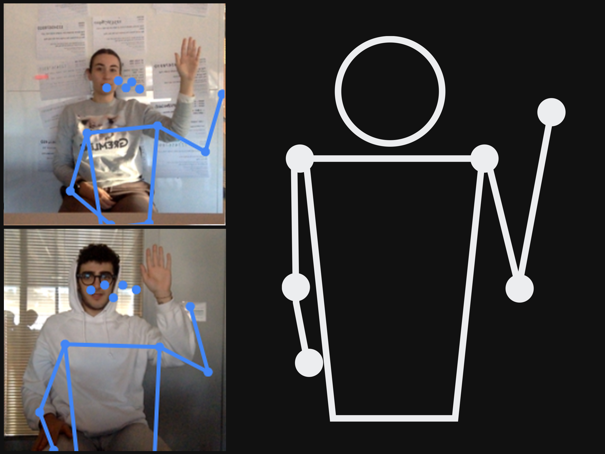

Giorgio Nicotera
MaPose
The goal of my project is to use MapBox, a platform for creating customized maps, to create an interactive map that allows, through Machine Learning, to navigate and interact through different citys without using a keyboard or mouse, but with the poses of our body.
Object
Locations (+ zoom)
WEB PLATFORM
As you can see, the city's pose depends on the main monument of that location, for example for Paris, the pose try to copy the structure of the Eiffel Tower, for Rio de Janeiro the Christ de Reedimer ecc.. Also the map was edited by me, i choose the information, the structure, the colors and even the projections and terrain.
This timelapse show perfectly the buiding of the poses, first of all i choose a pose that can be easly remembered and copyied, after i open the Google Teachable Machine and teach the pose to the platform, after i link the pose with a label of the city's name amd import it on my code.
CITY POSES
these are the poses to do if you want to travel in the respective cities.
Every time the code recognizes the pose made through the camera, it links it to a specific action, in my case I provide the coordinates, the zoom and the duration of the transition from one city to another.
RANDOM
Random pose uses a mathematical calculation in code that multiplies and randomizes the coordinates, resulting in any place in the world, whether it is land or ocean.
The idea behind this pose was to cover your eyes so as not to see where the map takes us, so reopen them once and find out which place we have been casually taken to, obviously being the earth covered in a very large percentage by water, it is very likely that we will be taken there.
ZOOM
In this case the pose is very simple, for the zoom I decided to do something very easy, using only one arm to perform this simple action, the zoom depth is fixed at the moment, i.e. it doesn't allow you to zoom in several times.
The zoom pose allows, once an area of interest has been found using the random or other specific poses, to better identify the elements contained in the map, such as buildings, monuments and much more, the initial zoom is 10, after the pose it doubles.